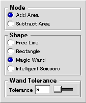

|
|
Selector-tool
The selector-tool allows the selection of some area from the image. This tool has many different modes that affect how the tool is used.
Settings
Figure 1 shows the contents of the tool-setup-window when it is displaying the setup for the selector-tool.
Figure 1: Setup view for the selector-tool.
| 
|
- Add Area
- When this option is selected, the newly made selection will be added to the previous selection.
- Subtract Area
- When this option is selected, the newly made selection will be subtracted from the previous selection.
- Free Line
- When this option is selected, the selection is made by clicking on the image and dragging the mouse around to draw a free-hand line. When the button is released the area that is inside of the line will be the new selection.
- Rectangle
- When this option is selected, the selection is made by clicking on the image and dragging the mouse around to draw a rectangle. When the button is released the area that is inside of the rectangle will be the new selection.
- Magic Wand
- When this option is selected, the selection is made by clicking on the image once. The tool then selects a proper area that matches the color that the click was made on and this becomes the new selection.
- Intelligent Scissors
- When this mode is selected, the selection is made by clicking on the image several times to make a path of points. The tool combines these points by lines that try to follow the edges in the image. The tool is finished by double-clicking on the image, which causes the area that is inside the lines to become the new selected area.
- Tolerance
- Tolerance controls how different colors the magic wand sees as the same color. If the tolerance is 0, the colors must match exactly to be considered the same, and if the tolerance is 100, all colors will be considered the same.
|